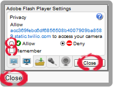

<!DOCTYPE html> 
<html xmlns="http://www.w3.org/1999/xhtml" xml:lang="en" lang="en"> 
<head> 
	<link rel="stylesheet" href="css/main.css">
	<link rel="stylesheet" href="css/ao.css">
	<link rel="stylesheet" href="css/setup.css">

	<link rel="stylesheet" href="css/css.css">
	<link rel="stylesheet" href="css/css1.css">
	<link rel="stylesheet" href="css/css2.css">	

	

    <script src="twilioSetup/jquery.min.js"></script>
	<script type="text/javascript" src="//static.twilio.com/libs/twiliojs/1.1/twilio.min.js"></script>

	 <script type="text/javascript" src="twilioSetup/flash_detect_min.js"></script>
	 
	<script language="javascript">var js_version="1.0"</script>
	<script language="javascript1.1">var js_version="1.1"</script>
	<script language="javascript1.2">var js_version="1.2"</script>
	<script language="javascript1.3">var js_version="1.3"</script>
	<script language="javascript1.4">var js_version="1.4"</script>
	<script language="javascript1.5">var js_version="1.5"</script>
	<script language="javascript1.6">var js_version="1.6"</script>
	<script src="twilioSetup/bowser.min.js"></script>
	 
	 
	 <script>
			// TO DO - this is a very generically named, global function that is called by the twilio mic.swf - need bespoke swf to fix this
			function flashLoaded(){
				getMicNames();
			}

			function twilioSetupTryAgain(option) {
				if (option == 0) {
					$('#defaultModalOk').click();
					setTimeout(function() {
						twilioController.setupTwilioAdvanced()
					}, 1000);
				} else if (option == 1) {
					location.reload();
				}
			}

			function twilioSetupSkip(option) {
				var isTryCloseBrowserInfoRequired = false;
				if (bowser.name=="Internet Explorer" || bowser.name=="Firefox") {
					isTryCloseBrowserInfoRequired = true;
				}
				if (option == 0) {	
					$('#defaultModalClose').click();
				} else if (option == 1) {
					if (isTryCloseBrowserInfoRequired) {
		                var html = 'Please try restarting your browser.\n\nAfter logging back in, select "Telephone Setup" under the "Settings" menu.';
		                html+='\n\nPlease close the current browser tab to return to the app.';
		                alert(html);
		                window.close();		
					} else {
						window.close();
					}			
				}	
			}			
	</script>

</head> 
<body id='twiloSetup'>
<div id='twiloSetupWrapper'></div>
</body> 
	
	<script>
	
	
	
		var twilioInstsalled=false;
		//function setupTwilioTest(){
			
			//reset to ensure connection is checked every time
			//this.twilioInstsalled=false
			var success=false;
			var html;
			html="<div id='twiloSetupAssistant'><div class='header'><div class='customer-logo'></div><h1>Telephone Set Up</h1><p>This page will check your browser configuration in order to enable your browser to call directly to the telephone network (please note that this is a premium service). If all tests are successful, you will hear a tone. Please also note that as an extra security precaution, telephone calls are only allowed through your computer&apos;s default microphone.</p></div>"
		
			
			html+='<div id="flashplayer" align="center" style="margin:20px; display:none;"><a href="http://get.adobe.com/flashplayer/" style="font-weight:bold; font-size:24px; color:black;">Click to download the latest Flash Player.</a></div>'
			
			
			html+='<div style="position: relative;left:0.1px; width:1px; height:1px; background-color: #fff;" >'
			html+='<object classid="clsid:d27cdb6e-ae6d-11cf-96b8-444553540000" codebase="http://fpdownload.macromedia.com/pub/shockwave/cabs/flash/swflash.cab#version=8,0,0,0" width="1" height="1" id="myMovie" align="middle">'
			html+='<param name="allowScriptAccess" value="always" />'
			html+='<param name="movie" value="assets/mic.swf" />'
			html+='<param name="quality" value="high" />'
			html+='<param name="bgcolor" value="#ffffff" />'
			html+='<embed src="assets/mic.swf" quality="high" bgcolor="#ffffff" width="1" height="1" name="myMovie" align="middle" allowScriptAccess="always" type="application/x-shockwave-flash" pluginspage="http://www.macromedia.com/go/getflashplayer" />'
			html+='</object>'
			html+='</div>'
			
			html+='<div class="ao-twilio-test-result" id="browserSetup"><span class="ao-twilio-test-name"> Browser:</span><span class="ao-twilio-test-desc"> checking...</span></div>'
			html+='<div class="ao-twilio-test-result" id="jsSetup"><span class="ao-twilio-test-name"> Javascript:</span><span class="ao-twilio-test-desc">checking...</span></div>'
			html+='<div class="ao-twilio-test-result" id="flashSetup"><span class="ao-twilio-test-name"> Adobe Flash:</span><span class="ao-twilio-test-desc">checking...</span></div>'
			html+='<div class="ao-twilio-test-result" id="micSetup" style="display:none"><span class="ao-twilio-test-name"> Microphone:</span><span class="ao-twilio-test-desc">checking...</span></div>'

			if (bowser.name=="Chrome"){
				html+='<div class="ao-twilio-test-result" id="twilioSetup"><span class="ao-twilio-test-name"> Connection:</span><span class="ao-twilio-test-desc">checking...</span>';			
			} else {
				html+='<div class="ao-twilio-test-result" id="twilioSetup"><span class="ao-twilio-test-name"> Connection:</span><span class="ao-twilio-test-desc">checking...</span><span id="blank-permissions-text" style="display:none"><a href="#" onClick="twilioPermissionHelp()" style="margin-left:5px">If you see a blank permissions box click here.</a></span>'
			}
			
			if (bowser.name=="Chrome"){
				html+='<div class="ao-twilio-test-help" id="twilioSetupHelp"><h2>Connection help.</h2><p>The app needs permission to use your microphone. Please click on the "Allow" button at the top of the screen.</p></div>'
			}else{
				html+='<div class="ao-twilio-test-help" id="twilioSetupHelp"><h2>Connection help.</h2><p>The app needs permission to use your microphone. Please select "allow" and "remember" in the dialog box near the top of the screen, then click both close buttons.</p>';
				html+='<p>If Telephone Setup fails after "Try Again", please restart your browser then select "Telephone Setup" under the "Settings" menu.</p></div>';
				html+='<div  class="ao-twilio-test-help" id="twilioPermissionHelp" style="display:none">';
				html+='<h2>Manual Setup Instructions.</h2><p>If you can see a blank permissions box you will need to complete setup manually.</p><ol>' 
				html+='<li>Right click on the blank permissions box and select "Global Settings...".</li>'
				html+='<li>Click the Camera and Mic tab.</li>'
				html+='<li>Check "Ask me when a site wants to use the camera or microphone".</li>'
				html+='<li>Click the "Camera and Microphone settings by site" button.</li>'
				html+='<li>If you can see the domain <span class="appDomain"></span>, select it, if not click "Add" and add the domain "<span class="appDomain">.</span>"'
				html+='<li>Choose "Allow" from the camera and microphone permissions dropdown list.</li>'
				html+='<li>Click "Close".</li>'
				html+='</ol></div>'							
			}
			html+='</div>'
			html+='<div align="center" id="spinny"> </div>'
			html+='<div align="center" class="ao-twilio-test-results" style="display:none;" id="resultdiv">'
			html+='<div id="resulttext" style="font-size:1.3em; margin:4px; color:#fff"></div>'
			html+='</div>'
			
			//Utils.displayModal("Twilio Setup", html, "OK", "Close", function(e) { });
			
			$('#twiloSetupWrapper').html(html)
			
			
			var steps=['hasFlashInstalled','flash_supported'];
			function hasFlashInstalled(){
				if (!FlashDetect.installed)
					$('#flashplayer').show();
				return FlashDetect.installed;
			}
			function flashVersion(){
				return FlashDetect.raw	
			}
			function flash_supported(){
				return (FlashDetect.major>10 || (FlashDetect.majorAtLeast(10) && FlashDetect.minorAtLeast(1)));
			}
			function flash_validation(){
				if (hasFlashInstalled()){
					//return new ClientTestResult('Adobe Flash Version', flashVersion(), hasFlashInstalled && flash_supported());
					$('#flashSetup .ao-twilio-test-desc').html('<b>OK</b> Version: '+ flashVersion());
					$('#flashSetup').addClass('ao-twilio-test-pass')				
				} else{
					$('#flashSetup .ao-twilio-test-desc').html('<b>FAIL</b> Flash not installed.'); 
					$('#flashSetup').addClass('ao-twilio-test-fail')
					success=false;
					finish();
				}
			}
			function microphone_validation(){
				$('#micSetup').show();
				try{
					$('#micSetup .ao-twilio-test-desc').html('<b>OK</b> '+ mics[0] + ' <a href="#" onClick="twilioMicChangeHelp()">Do you want to use a different microphone?</a><div id="twilioMicChangeHelp" class="ao-twilio-test-help" style="display:none">Your computer&apos;s default microphone is used for telephone calls. If you wish to use a different microphone please exit setup, set the new microphone as your computer&apos;s default, then re-run setup.</div>'); 
					$('#micSetup').addClass('ao-twilio-test-pass')
					
					
				}	catch(err)
				{
					$('#micSetup .ao-twilio-test-desc').html('<b>FAIL</b> No microphone detected.'); 
					$('#micSetup').addClass('ao-twilio-test-fail')
					success=false;
					finish()
				}
			}
			
			function twilioMicChangeHelp(){$('#twilioMicChangeHelp').show()}
			function twilioPermissionHelp(){
				var appDomain;
				if (location.host.toLowerCase().indexOf("alwaysorg") != -1){
					appDomain='acad695c8da81d66a2249ab1b2c64259c3';
				}else{
					appDomain='acc369febc6df6856508b4007909ba8589';
				}
				$('.appDomain').html(appDomain + '.static.twilio.com');
				if ($('#twilioPermissionHelp').css('display') == "none") {
					$('#twilioPermissionHelp').show();
				} else {
					$('#twilioPermissionHelp').hide();
				}				
			}
			//function flashLoaded(){
			//	micNames();
			//}
			
			//function micNames() {
			//	mics=getMovieName("myMovie").micNames(); 
			//	runTest(microphone_validation());
			//}
			
			function getMicNames(){
				mics=getMovieName("myMovie").micNames(); 
				microphone_validation();
			}
			
			
			function getMovieName(movieName) {
				if (navigator.appName.indexOf("Microsoft") != -1) {
					return window[movieName]
			   }
			   else {
				   return document[movieName]
			   }
			}
			
			
			
			function browserTest(){
				
			var browserStatus='pass'

				switch (bowser.name) {
					case "Internet Explorer":
						if (bowser.version<7){browserStatus='fail'}
						break;    
					case "Chrome":
						if (bowser.version<11){browserStatus='fail'}
						break;
					case "Firefox":
						if (bowser.version<3.6){browserStatus='fail'}
						break;
					case "Safari":
						if (bowser.version<5){browserStatus='fail'}
						break;
					default:
						browserStatus='unknown'
						console.error( "browser not identified: " );
				}
				
				if(browserStatus=='pass'){
					$('#browserSetup .ao-twilio-test-desc').html('<b>OK</b> '+ bowser.name + ' ' + bowser.version);
					$('#browserSetup').addClass('ao-twilio-test-pass')
				}else if(browserStatus=='unknown'){
					$('#browserSetup .ao-twilio-test-desc').html('<b>FAIL</b> sorry we could not identify your browser ');
					$('#browserSetup').addClass('ao-twilio-test-fail')
					success=false;
					finish();
				}else{
					$('#browserSetup .ao-twilio-test-desc').html('<b>FAIL</b> this browser is not supported'+ bowser.name + ' ' + bowser.version);
					$('#browserSetup').addClass('ao-twilio-test-fail')
					success=false;
					finish();
				}
				
				
			}
			
			function finish(){
				if (success){
					$('#resulttext').html('Congratulations, setup is complete.<br><a href="javascript:window.close();" style="color:white">Click here or close the current browser tab to return to the application.</a>');
					$('#resultdiv').css('background-color', '#5291c6');
				}else{
					$('#resultdiv').css('background-color', '#CA3A26');

					var html = "<p>The browser test was not successful.</p>" + 
					'<button type="button" class="btn btn-default" onClick="javascript:twilioSetupSkip(1);window.close();">Skip Recorded Call Setup</button>' + 
                	'<button type="button" class="btn btn-primary" onClick="javascript:twilioSetupTryAgain(1);">Try Again (recommended)</button>';
					//"<button type=\"button\" class=\"btn btn-primary\" onClick=\"javascript:window.open(\"twilioSetup.html\", \"_blank\", \"menubar=yes, status=yes, toolbar=yes, scrollbars=yes, width=800, height=600\")\">Try Again (new tab)</button>";                	;

					$('#resulttext').html(html);

				}
				$('#spinny').hide();
				$('#resultdiv').show();
			}
			
		
				$('#jsSetup .ao-twilio-test-desc').html('<b>OK</b> version:' + js_version);
				$('#jsSetup').addClass('ao-twilio-test-pass')
				browserTest();
				flash_validation();
				
				
				getTwilioSetupStatus();
				setupStatus.done(function(result) {
						if (result==true){
							$('#twilioSetup .ao-twilio-test-desc').html('<b>OK</b>'); 
							$('#twilioSetup').addClass('ao-twilio-test-pass')
							$('#twilioSetupHelp').hide("fast");
							if (bowser.name!="Chrome"){
								$('#blank-permissions-text').show();
							}
							success=true;
						}else{
							$('#twilioSetup .ao-twilio-test-desc').html('<b>FAIL</b>');
							$('#twilioSetup').addClass('ao-twilio-test-fail');
							if (bowser.name!="Chrome"){
								$('#blank-permissions-text').show();
							}
							success=false;
						}
						
						finish();
						
						// returns true if previously setup during this session or  user grants permission via dialog within 20 seconds
						// returns false if not previously setup and user fails to grant permission via dialog within 20 seconds
				});
				
				//second chance -  if user hits accept after test has failed
				Twilio.Device.connect(function (conn) {
					$('#twilioSetup .ao-twilio-test-desc').html('<b>OK</b>'); 
					$('#twilioSetup').removeClass('ao-twilio-test-fail')
					$('#twilioSetup').addClass('ao-twilio-test-pass')
					$('#twilioSetupHelp').hide("fast");
					success=true;
					finish();
				});
			
			
			
			
		//}
		
		function getTwilioSetupStatus(){
			//this.twilioDeviceReady = false;
			//this.twilioConnectionReady = false;
			//var self=this;
			
			function asynch_function() {
				var promise = new_promise();
				do_asynchronous(function callback(result) {
					promise.resolve(result); // gets called after 1 second
				});
				return promise;
			}

			setupStatus = asynch_function();
			

			function new_promise() {
				var handlers = [];
				return {
					"resolve": function (result) {
						for (var i = 0; i < handlers.length; i += 1) {
							handlers[i](result);
						}
					},
					"done": function (a_callback) {
						handlers.push(a_callback);
					}
				};
			}

			function do_asynchronous(callback) {
				
				//if(!twilioInstsalled){setupTwilio();}
				setupTwilio();
				var i=0;
				function checkStatus()
				{
					if((!twilioInstsalled) && i<20){  
						i++;
						setTimeout(checkStatus, 1000);
					}else{
						callback(twilioInstsalled);
					}
				}
				setTimeout(checkStatus, 1000);
				
			}
		
		
		}
				
		function setupTwilio(){
		var token=localStorage.getItem("twilioToken")
			Twilio.Device.setup(token);
				Twilio.Device.ready(function (conn) {
					twilioDeviceReady = true;
				 });
				var TwilioSetpConnection=Twilio.Device.connect();
				
				Twilio.Device.connect(function (conn) {
					twilioConnectionReady = true;
					twilioInstsalled = true;
				 });
		}	

		
	</script>
</html>
 